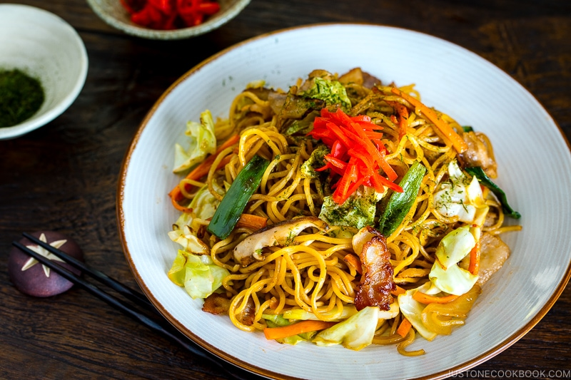

Yakisoba Recipe

Ingredients
- 8 ounches Yakisoba Noodles (or substitute with spaghetti or ramen noodles)
- 1/2 pound boneless chicken or pork loin, sliced into thin strips (optional)
- 1 tablespoon Vegetable Oil
- 1 onion, thinly sliced
- 2 carrots, julienned
- 1 small cabbage, thinly sliced
- 2 green bell peppers, thinly sliced
- 3 tablespoons soy sauce
- 2 tablespoons worcestershire sauce
- 1 tablespoon oyster sauce
- 1 tablespoon ketchup
- 1 tablespoon sugar
- 1/4 teaspoon salt
- 1/4 teaspoon black pepper
Optional Ingredients/Toppings
- Sliced green onions
- Pickled ginger
- Sesame Seeds
Steps
- If using Yakisoba noodles, follow the package instructions to cook them until they are al dente.
Drain and rinse the noodles under cold water and remove excess starch. Set aside.
- In a large skillet or wok, heat the vegetable oil over medium-high heat. If using chicken or pork,
add the meat to the skillet and stir-fry until cooked through. Remove the meat from the skillet and set aside.
- In the same skillet, add the sliced onion and carrots. Stir-fry for a few minutes until they start to soften.
- Add the cabbage and bell peppers to the skillet and continue stir-frying for another 3-4 minutes until the vegetables
are crisp-tender.
- Push the vegetables to one side of the skillet and add the cooked noodles to the empty space. Let them heat up for a minute or two
before tossing them with the vegetables.
- In a small bowl, whisk together the soy sauce, worcestershire sauce, oyster sauce, ketchup, sugar, salt, and black pepper.
Pour the sauce mixture over the noodles and vegetables. Stir-frying everything together for another 2-3 minutes, ensuring the sauce
is evenly disributed.
- If using cooked meat, return it to the skillet and toss it with the noodles and vegetables.
- Taste the Yakisoba and adjust seasoning if needed.
- Serve the Yakisoba hot, garnished with sliced green onions, pickled ginger, and/or sesame seeds if desired.